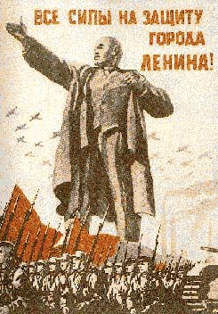

Page index / courses
1910-1920
Russian Civil War:
For information on the civil war, click here to link to the Encyclopaedia Britanica
Bolsheviks Mensheviks
For information on the revolution of 1917, click here to link to the Encyclopaedia Britanica.
Click here for a timeline of the Revolution
Click here to learn more about the path to revolution
